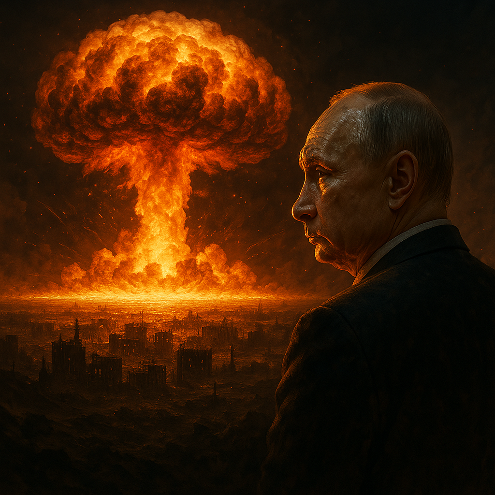

A Verdade Cruel: Por Que Ninguém Enfrenta Putin Diretamente?
Publicado em 2025-03-29 00:14:54

Imagem cortesia do ChatGPT (c)
Putin não é invencível — ele tem família, aliados vulneráveis e um regime que depende de lealdades frágeis. Mas a razão pela qual ninguém o enfrenta abertamente vai além do medo. É um jogo de poder, chantagem e cálculo geopolítico.
1. O Dilema Nuclear: "Melhor um Ditador Vivo Que um Mundo Morto"
Putin já disse: "Se a Rússia não existir, para que precisamos de um mundo?"
Ele mantém 6.000 ogivas nucleares, muitas em alerta máximo.
O Ocidente teme que, se for encurralado, ele use armas táticas (como já ameaçou na Ucrânia).
Resultado? Ninguém quer ser o primeiro a provocar o fim do mundo.
2. Os Filhos e Netos de Putin — E Por Que Isso Importa
Putin tem duas filhas (Maria e Katerina) e netos. Mas:
Eles vivem escondidos, com identidades falsas e segurança máxima.
Nenhum oligarca ou general ousaria tocá-los — seria suicídio.
Putin já mostrou que não hesita em sacrificar pessoas (como os soldados russos na Ucrânia).
3. A Única Maneira Realista de Tirar Putin do Poder
Se nem bombas, sanções ou protestos funcionam, o que pode derrubá-lo?
☠️ Opção 1: Um Golpe das Elites Russas
Generais e oligarcas estão fartos de perder dinheiro e poder.
Se a guerra virar insustentável, podem agir.
Risco: Quem substituiria Putin? Alguém ainda pior?
💣 Opção 2: A Rússia Colapsar Sozinha
Economia em declínio, jovens fugindo do país.
Sanções a longo prazo estrangulam a máquina de guerra.
Protestes em massa (como em 2023, mas maiores).
🌍 Opção 3: O Ocidente Parar de Ter Medo
Fornecer armas decisivas à Ucrânia (caças F-16, mísseis ATACMS).
Cortar todo o comércio com a Rússia (incluindo através de terceiros).
Apoiar sabotagens internas (como ataques a bases militares).
4. A Frase Que Define Tudo:
"Os russos também amam seus filhos, mas o medo é mais forte que o amor."
O povo russo sabe que protestar = prisão ou morte.
As elites preferem riqueza e poder à liberdade.
O mundo tem mais medo de Putin do que ódio por ele.
Putin Só Cai Quando o Custo de Mantê-lo For Maior Que o de Removê-lo
Enquanto as elites russas lucrarem e o Ocidente hesitar, ele continuará no poder. Mas a história mostra que nenhum regime dura para sempre — nem mesmo o dele.
Pergunta : O mundo vai esperar Putin morrer de velhice… ou vai finalmente agir?
🔥 Enquanto isso, a Ucrânia sangra. E o mundo assiste.
Mas Putin sabe bem, nem os bunkers mais profundos salvariam a família de Putin num holocausto nuclear. E essa é a contradição fatal do seu poder.
A Mentira que Sustenta Putin
Ele finge que uma guerra nuclear é "vencível", mas sabe que:
Seus netos respirariam cinzas radioativas mesmo em refúgios subterrâneos.
Nenhum palácio na Sibéria os protegeria da fome pós-apocalíptica.
O dinheiro não compra oxigênio quando a atmosfera está envenenada.
Por Que Isso Importa?
Sua família é seu ponto cego:
As filhas (Maria Vorontsova e Katerina Tikhonova) vivem sob identidades falsas, mas dependem do mesmo mundo que Putin ameaça destruir.
Netos frequentam escolas secretas na Suíça? Inútil quando a comida acabar.
Os oligarcas sabem disso:
Eles também têm famílias em Londres e Dubai. Nenhum iate salva ninguém do inverno nuclear.
Foi por isso que Prigozhin se revoltou em 2023 – percebeu que a guerra os levaria todos ao abismo.
O Ocidente subestima esse medo:
Putin não é um "louco suicida". É um psicopata calculista que usa o medo para chantagear.
Mas até ele tremeria se visse filhas agonizando por radiação.
Como Explorar Essa Fraqueza?
Guerra psicológica: Vírus de computador que mostrem simulações de Moscovo nuclear a elite russa.
Vazamentos direcionados: Provas de que até os bunkers de Putin falhariam.
Pressão sobre seus aliados: Lembrar generais que seus filhos morreriam junto com os dele.
A Verdade Final
Putin joga roleta russa com a humanidade, mas a arma está apontada para a cabeça dos seus próprios netos. Alguém naquele círculo íntimo precisa perceber: "Se ele puxar o gatilho, não há herdeiros para seu império de cinzas."
"Nenhum tirano sobrevive quando seus carrascos percebem que também estão na fila da morte."
A pergunta que assombra o Kremlin: Quem será o primeiro a trair Putin para salvar seus próprios filhos?